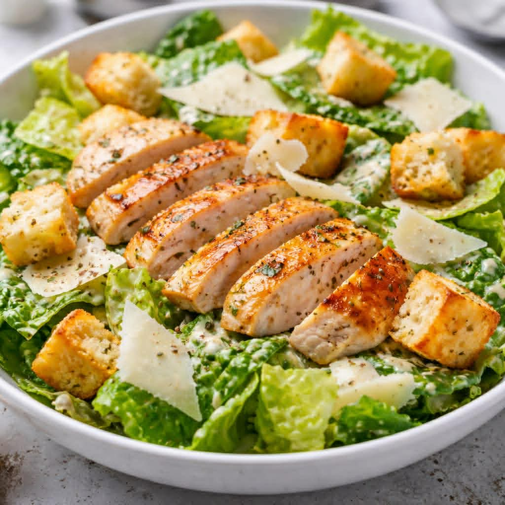

🥗Caesar salad

🛒ინგრედიენტები (2-3 პორცია)
სალათისთვის:
- 1 თავი რომაინ სალათი
- 1 ქათმის ფილე (სურვილის მიხედვით)
- 1 ჭიქა კრუტონები (შებრაწული პურის კუბიკები)
- 40-50 გ პარმეზანი (გახეხილი ან თხელ ნაჭრებად)
სოუსისთვის:
- 1 კვერცხის გული
- 1 ჩაის კოვზი დიჟონის მდოგვი
- 1 კბილი ნიორი (დაჭყლეტილი)
- 2 სუფრის კოვზი ლიმონის წვენი
- 4 სუფრის კოვზი ზეითუნის ზეთი
- 2 ანჩოუსის ფილე (სურვილის მიხედვით)
- მარილი და შავი პილპილი გემოვნებით
👩🍳 მომზადება:
- ქათამი:
ქათმის ფილეს მოაყარე მარილი და პილპილი, შეწვი ტაფაზე ორივე მხრიდან 4–5 წუთი, სანამ კარგად მოიხარშება. დაჭერი თხელ ნაჭრებად.
- კრუტონები:
პური დაჭერი კუბებად, მოასხი ცოტა ზეითუნის ზეთი და გამოაცხვე ღუმელში 180°C-ზე 8–10 წუთი.
- სოუსი:
ჯამში აურიე კვერცხის გული, მდოგვი, ნიორი და ლიმონის წვენი. ნელ-ნელა დაამატე ზეითუნის ზეთი და თქვიფე, სანამ გასქელდება
. ბოლოს დაამატე წვრილად დაჭრილი ანჩოუსი, მარილი
- შეკრება:
რომაინი ხელით დაფშვნე, აურიე სოუსთან, დაამატე ქათამი და კრუტონები. ზემოდან მოაყარე პარმეზანი.